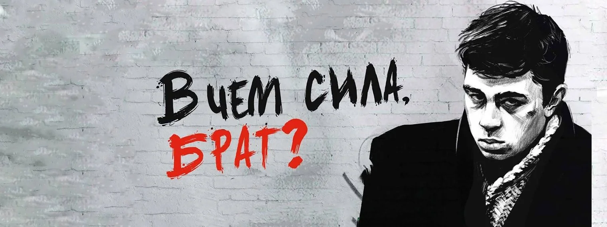
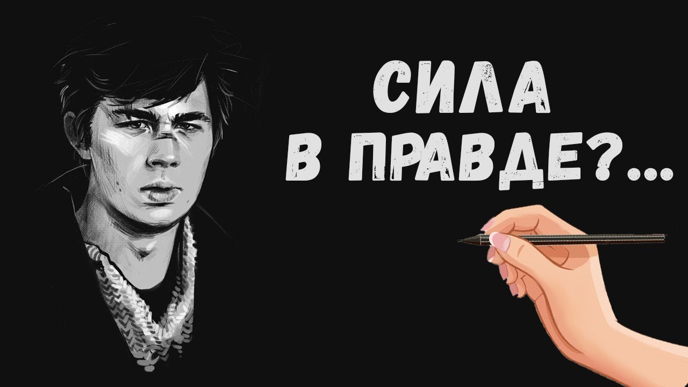
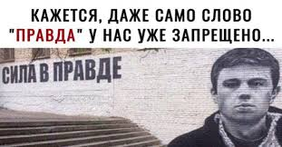

Nazism is evil.
нацизм это зло.
For the most terrible sins, you can end up in this hell: National Socialism. Work with payment - it is impossible! As the president himself said - "there is no money, but you hold on." It is worth guessing that if any person is paid, the money of which will be enough for a plane ticket. He will immediately wash off in one end and that's it! Goodbye! In the civilized world there are laws, rules. And as one comedian said: working at McDonald's with a small salary, the manager told him: "for such an idiot like you, I would pay even less, but it would be illegal." The most striking thing about this is that the United States has a law. In Russia, in fact, there is no law. The law wakes up with reprisals and torture only at the call of the National Socialists. For people there is no law! Russia is the largest concentration camp in the world. With a population of about 50 million. And this is the largest country on the planet! With a false estimate that 140 million people live in Russia, but 15 million-plus cities are officially registered. This is >15 million. The rest have all already left, only the useless ballast of the disabled and the National Socialists are left, threatening reprisals against the insane law that does not care about justice.
За самые страшные грехи можно оказаться в этом аду: национал социализма. Работать с оплатой - нельзя! Как сам президент сказал - “денег нет, но вы держитесь”. Стоит догадаться что если любому человеку заплатить, деньги которых хватит билет на самолет. Он тут же смоется в один конец и все! До свидания! В цивилизованном мире существуют законы, правила. И как говорил один комик: работая в макдональдсе с маленькой зарплатой, менеджер ему сказал: “такому оболтусу как ты, я бы платил еще меньше, но это будет противозаконно”. Больше всего в этом поражает что в соединенных штатах есть закон. В России же никакого закона по факту нет. Закон просыпается с расправой и пытками только по зову национал социалистов. Для людей же нет никакого закона! Россия самый большой концлагерь в мире. С численностью населения около 50 миллионов. И это самая огромная страна на всей планете! С лживым подсчетом что в России живут 140 миллионов, но официально зарегистрировано 15 городов миллионников. Это >15 миллионов. Остальные все уже уехали, остались только никчемный балласт инвалидов и национал социалисты, угрожающие расправой c безумным законом которому плевать на правосудие.
Center of Nazism - Moscow!
Центр нацизма - москва!
And it becomes clear why it is impossible to work. If a person transforms into a qualified specialist: “all goodbye”. There is nothing for successful people to do in Russia. The work is not paid. For the same reason, the national socialist law with a "living wage". It is not possible to buy a one-way ticket for it.
И становится понятно почему нельзя работать. Если человек трансформируется в квалифицированного специалиста: “все до свидания”. В России нечего делать успешным людям. Работу не оплачивают. По этой же причине национал социалистический закон с “прожиточным минимумом”. На него на возможно купить билет даже в один конец.
No to Nazism!
Нет нацизму!
Filthy Muscovites must be stopped. The United States needs to distribute weapons not only to Ukraine, but also to all friendly Russians who are ready to fight for freedom and win! Because even the Moscow president said: “we can repeat it,” after which he closed himself in a bunker and grew a rat mustache. On YouTube there is a documentary video of a monkey with a machine gun. In the hands of an ak-47, forcing any Aryan to run headlong without sparing his legs. According to the technology, the Kalashnikov assault rifle was invented ingeniously for super-poor places.
Поганых москвичей нужно остановить. Соединенным штатам нужно раздавать оружие не только Украине, а также всем дружественным Россиянам готовых бороться за свободу и побеждать! Потому как даже московский президент сказал: “можем и повторить”, после чего закрылся в бункере и отрастил крысиный усик. На ютубе есть документальная видеосъемка обезьяны с автоматом. В руках ак-47, заставляющий бежать любого арийка сломя голову не жалея ног. По технологии автомат калашникова был придуман гениально для сверх нищих мест.
The basis of his superiority is something familiar to everyone: the great Moscow beggary. A proven trend is that the poverty of Moscow will continue to flourish. This is truly one of the greatest phenomena in the world. In a great country, greatness has always gone off scale! But not on what one could be proud of, but only on begging, Nazism and ugliness. Fat Moscow set up a concentration camp with famine and torture, so any normal Russian will gladly take a machine gun and shoot these fascist scum. No to Moscow, no to Nazism!
Основа его превосходства - это знакомое для всех: великое московское нищенство. Проверенная тенденция что нищета москвы так и будет процветать. Это по настоящему один из самых величайших феноменов мира. В великой стране величие всегда зашкаливало! Но не на том чем можно было бы гордиться, а только на нищенстве, нацизме и безобразии. Жирная москва устроила концлагерь с голодомором и пытками, поэтому любой нормальный россиянин с радостью возьмет автомат и расстреливает этих фашистских мразей. Нет москве, нет нацизму!
Internet blocking.
Блокировка интернета.
So the cheapest Moscow company Rostelecom is blocking many sites that would tell the truth about the shelter of war criminals of the Third Reich in Moscow. And not somewhere where you could hide, but where you can lie and continue your National Socialist tactics to exterminate humanity. Otherwise, why else is Russia, as the largest country in the world, the most uninhabited, where forest fires in the summer poison the air. More than the sea brings. There is no one to put out the fires, no people, no technology: "illegal labor activity, no money, but you hold on." Nazism will end when Moscow is banned from exploiting, killing, torturing and intimidating civilians.
Так самая дешевая мАсковская компания “ростелеком” блокируют многие сайты, на которых бы говорилась правда, о укрытии военных преступников третьего рейха в москве. И не где нибудь где можно было бы спрятаться, а там где можно врать и продолжать свою национал социалистическую тактику по истреблению человечества. Иначе почему еще Россия как самая большая стран мира самая незаселенная, где лесные пожары летом отравляют воздух. Больше чем приносит море. Пожары некому тушить, нет людей, нет технологий: “незаконная трудовая деятельность, денег не но вы держитесь”. Нацизму придет конец когда москве запретят эксплуатировать, убивать, пытать и запугивать мирных жителей.
The greatest scum of the planet "together with Hitler" Muscovites. Stalin is a rat, a filthy friend of Hitler, once in one of the already blocked publications, Stalin’s words were written: “Russia is a free country, therefore the abolition of the death penalty.” In fact, in labor concentration camps, how severe hell is, in the Holodomor that death penalty is equated with pardon. These are the working conditions! If you earn watering, we will write you down well for the death penalty. Pardon for a Russian is the death penalty. Because few people want to live in a poor country. The whole life of Russia is a bag on the head in front of a deceitful zmoboyashchkom and no freedom.
Величейшие мрази планеты “вместе с гитлером” москвичи. сталин крыса поганая дружок гитлера, когда то в одном из уже заблокированном изданиие писались слова сталина: “Россия свободная страна, поэтому отмена смертной казин”. На самам деле в трудовых концлагерях, насколько тяжелый ад, в голодоморе что смертаня казнь приравнивается к помилованию. Вот такие условия рабоского труда! Заработаешь поилование - хорошо запишем тебя на смертную казнь. Помилование для Россиянина - это смертная казнь. Потому что мало кто хочет жить в нищеской стране. Вся жизнь России это мешок на голове перед лживым змобоящком и никай свободы.
War criminals of the Third Reich.
Военые преступники третьего рейха.
No different tactic. The Nazis of the Third Reich and Muscovites are one person! Some rules: chocks nonhumans, slavery, labor without pay, Jews. One of the facts in this story will sound like in communist China, 30% of the Chinese have 3 blood types! It can be assumed that Chinese communism is not so national socialist. Whereas in Moscow, people are divided into Aryans and chocks: the first or, like the Hitlerer, the second blood group. And chocks: 3-4 and all Rh negative. The rest is all under the curtain of secrecy, the iron curtain, deceit. Why hide your blood type? Does the Russian president have a blood type like that of Hitler? …
Ничечм не отличимая тактика. Нацисты третьего рейха и москвичи - одно лицо! Одни правила: чурки нелюди, рабоство, труд без оплаты, евреи. Оди из фактов в этой истории будет звучать как в коммунитическом Китае 30% Китайцев имею 3 группу крови! Можно предположить что Китайский коммунизм не такой национал социалистический. Тогда как в москве, людей делят на арийцев и чурок: первая или как у гителера вторая группа крови. И чурки: 3-4 и все резус отрицательные. Остальное все под занавесой тайны, железного занавеса, обмана. Зачем скрывать свою группу крови? Неуж-то у Российского президента группа крови как у гитлера? …
Система комментирования SigComments